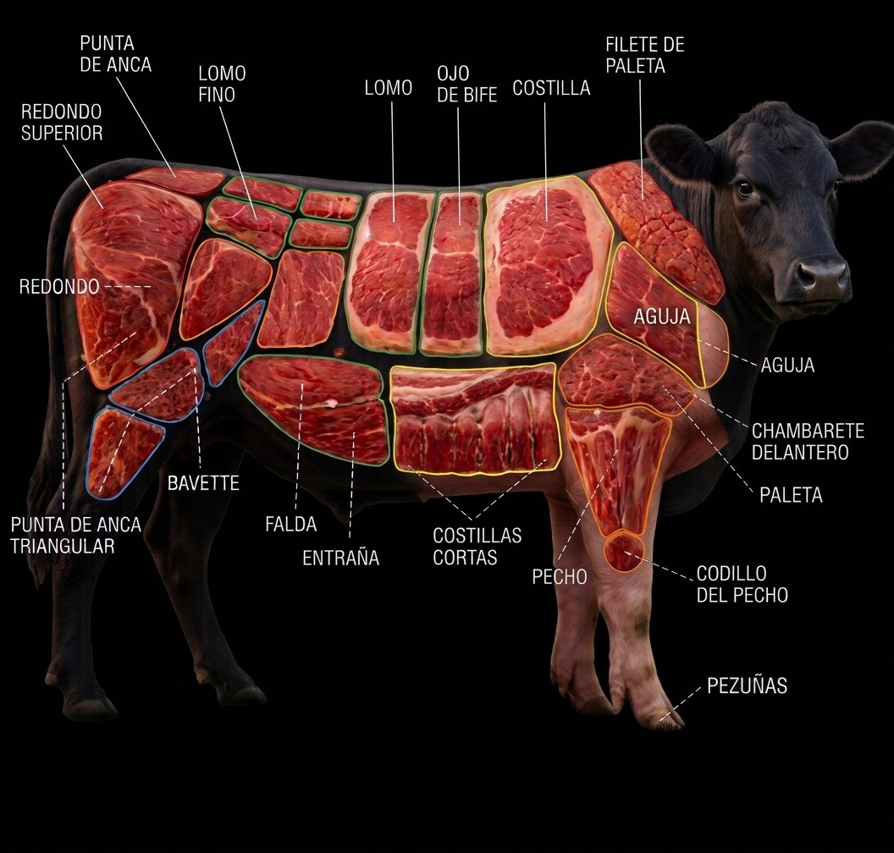
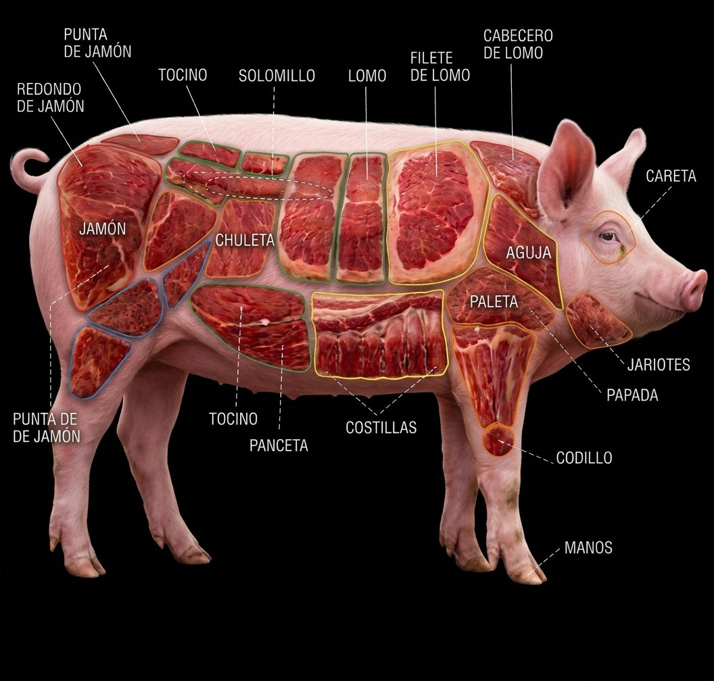

Misión
Llevar a cada mesa carne fresca y de calidad, con el mismo cuidado de siempre: del corral a tu cocina, sin atajos.
Ganado alimentado con cereales naturales. Cadena de frío cuidada del corral a tu cocina, con el oficio de una carnicería que lleva desde 1987 sirviendo a San Juan del Río.
Llevar a cada mesa carne fresca y de calidad, con el mismo cuidado de siempre: del corral a tu cocina, sin atajos.
Ser la distribuidora de carnes de referencia en la región, reconocida por su frescura, trato cercano y compromiso con cada cliente.
Mira dónde está cada corte y toca su nombre para saber para qué sirve, cómo se cocina y por qué elegirlo.


El favorito para asar a las brasas: jugosa y con el hueso que le da sabor.
Cada carnicería DICOSA sigue el mismo estándar: control de temperatura constante, cortes hechos frente al cliente y un equipo que conoce el oficio.
Así se ven nuestras instalaciones, exhibidores y cortes del día a día.
Surtimos a restaurantes, hoteles y negocios de la región con la misma calidad y frescura de nuestras carnicerías. Volumen constante, cortes a tu medida y entrega puntual.
Cuéntanos qué necesitas y te contactamos el mismo día para armar tu pedido.
Si te interesa trabajar con nosotros, cuéntanos de ti y adjunta tu CV. Revisamos cada solicitud y te contactamos si tu perfil encaja con alguna vacante.
Nuestra central de mayoreo está en Santa Cruz. Encuentra la sucursal más cercana.
Escribe tu código postal y te mostramos la sucursal que mejor te queda. Es opcional.
Solo guardamos tu código postal, de forma anónima, para saber en qué zonas nos conocen. Sin nombre, sin ubicación exacta. Aviso de privacidad
Cargando sucursales...
Cuidamos tus datos. Solo los usamos para atenderte. Leer aviso